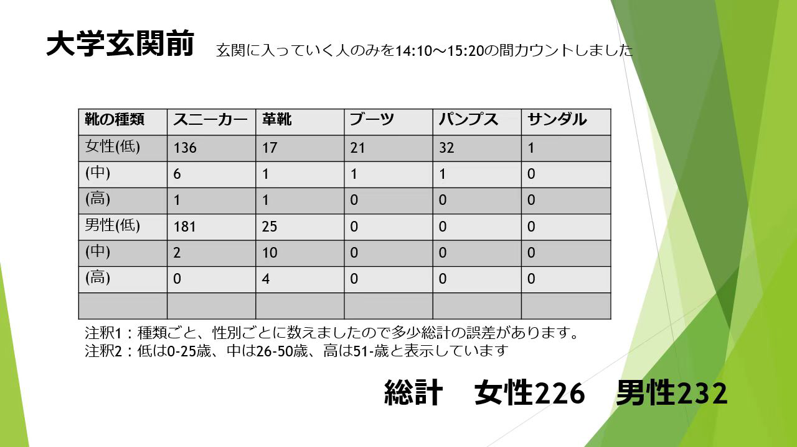
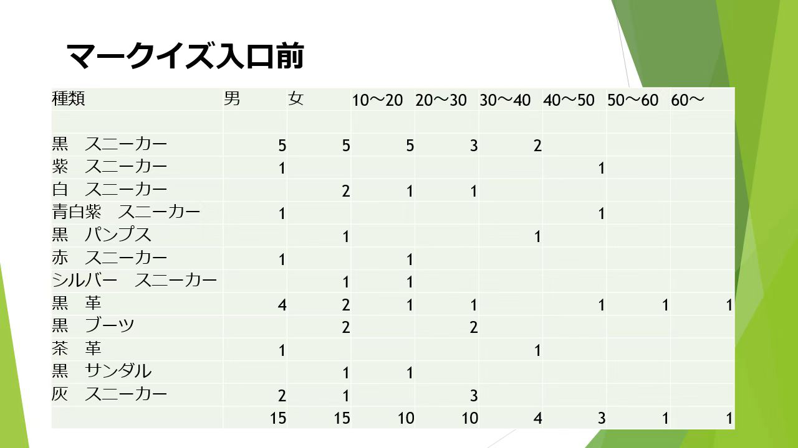

観察内容
テーマ：衣
対象：学生と社会人
内容：違う年齢、身分の人の靴と服
観察場所：大学玄関前、マークイズ入口
観察結果

男性232人 女性226人
大学の入り口で観測されているためか、
多くの学生は靴の選択において、快適性を優先しているので、
スニーカーを履く人の割合は他の種類の靴よりはるかに高い。

男性15人 女性15人
運動靴を選ぶ割合は依然として一番高い。
しかし、近くに会社があるので、社会人の割合が高くなる。
だから靴を選ぶ人も多い。
まとめ
観察した人の中で、30歳以下はスニーカーを履く割合が一番多く、二番目は革靴だ。
合わせやすいかからか、どんな服装でも黒と白が一番多い。
また、広場で遊んでいる社会人の多くは、スニーカーを履いている。
革靴を履いている人は仕事中を感じる。
結論：どの年齢や身分の人でも、日常的に靴を選ぶときには、
快適性を優先している人が多いように思う。